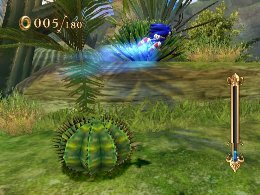
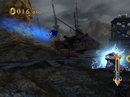
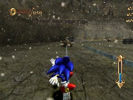
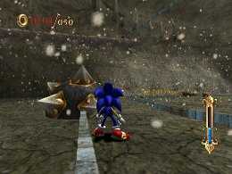
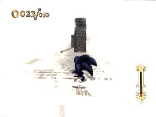

Canceling Actions
Advanced Strategies
There are a number of techniques you can use to get through the stages more effectively that involve canceling out of various actions.
Jump Cancel
After you jump up into the air, rather than waiting for gravity to bring you back down, you can save time by pressing the 2 Button immediately to cancel the jump and return to the ground quickly.

Homing Attack Cancel
Some enemies have special attacks such as breathing fire, or emitting lightning bolts with periods of invulnerability. If you do a Homing Attack on these enemies at the wrong time, you can quickly press the 2 Button to cancel the Homing Attack and avoid taking damage.

This becomes even more effective if you equip skills such as Cancel Dash or Cancel Absorber.
Sliding Cancel
Once you begin sliding, the general progression is slide jump land run. But instead, you can press the 1 Button to brake while sliding to move straight from sliding to running, and save some time.

To do this, you will need to press the 1 Button lightly, as if sliding your finger over it. (If you press it too long, Sonic will stop.)
When sliding, watch out for the objects placed on the maps to prevent you from crashing into enemies or falling, such as the logs on World 2. If you run into one of these objects, you will be knocked out of the sliding state. To avoid wasting time, make sure not to touch these objects.

Grind Cancel
If you press the 1 Button, you can apply the brakes to quickly stop grinding. In situations where there is a trap at the end of the grinding rail, for example, you can stop grinding quickly and safely by braking instead of using a trick.


Grind Trick Cancel
After jumping by performing a trick from a grind, you can press the 2 Button to cancel the jump and land quickly.
If you have a Quick Air-type skill equipped, the distance you travel during a trick will change, so canceling tricks while moving to other grinds becomes useful. If you use Time Break at the same time, you can do this with more precision.


« Spin Attacks | Advanced Strategies | Using Time Break and Speed Break »
 RSS
RSS